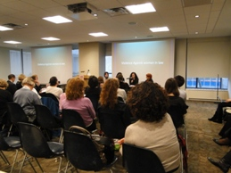
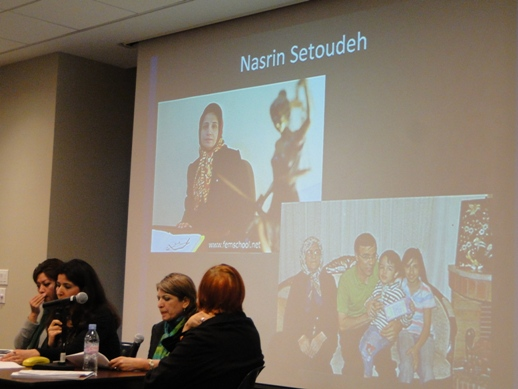

|
|
گزارش پانل خشونت علیه دختربچه ها و زنان در کنفرانس موقعیت زنان سازمان ملل(CSW)
دو شنبه16 اسفند 1389
تغییر برای برابری : دومین پانل فعالان زن حاضر در اجلاس 55 کمیسیون مقام زن در بعدازظهر 28 فوریه و در ساختمان church center برگزار شد. موضوع پانل به خشونت علیه زنان و دختران در ایران اختصاص داشت. این پانل و دیگر پانل فعالان زن ایرانی در ارتباط با تبعیض جنسیتی در نظام آموزشی ایران توسط آیدوس انجمن ایتالیایی زنان در توسعه و با مدیریت خانم دانیلا کلمبو برگزار شد.
طرح مسئله خشونت علیه زنان در ایران در این اجلاس از این نظر اهمیت داشت که در برنامه سال جاری کمیسیون، ارزیابی اقدامات دولت ها در زمینه مبارزه با خشونت علیه دختربچه ها که محور دوازدهم سند پکن است در کنار بحث آموزش، تکنولوژی و اشتغال زنان در دستور کار قرار گرفته است. جلسه ساعت 4 بعدازظهر در طبقه دوم ساختمان و با حضور علاقمندان به مسائل ایران برگزار شد. بعد از معرفی لیلا اسدی به عنوان کارشناس ارشد حقوق بین الملل و عضو کمپین یک میلیون امضا توسط خانم دانیلا کلمبو مطلب خود را با بررسی مصادیقی از خشونت علیه دختربچه ها با استناد به آمار و گزارش های رسمی ومرور مختصر برخی از قوانین موجود ارائه داد. مسائلی همچون کودک آزاری، قاچاق دختران، ازدواج اجباری و خودسوزی، قتل های ناموسی، تجاوز به محارم، فرار دختران از خانه و تن فروشی که به برخی از نکات مهم آن اشاره می شود:
در حوزه کودک آزاری با وجود رشد آمار هنوز تعریف دقیقی از تنبیه متعارف والدین در قانون مجازات و حتی در لایحه حمایت از اطفال و نوجوانان به عمل نیامده است. علیرغم افزایش رشد مسئله قاچاق دختران و با وجود تصویب قانون مبارزه با قاچاق انسان در سال 1383 هیچ گزارشی از روند اجرای این قانون و یا اخبار مربوط به دستگیری باندهای قاچاق دختران و مجازات آنها در ایران وجود ندارد.

وی در ارتباط با مسئله خودسوزی با بیان این که خودسوزی بدترین شکل خودکشی است، افزود: بالاترین آمار خودسوزی در ایران اختصاص به 300 مورد در سال در میان زنان ایلامی دارد. قربانیان نیز معمولا در طیف سنی 10-19 سال قرار دارند. وی اشاره کرد که ازدواج اجباری، تعدد زوجات و خشونت های خانگی از مهمترین عوامل رواج آن است در حالی که مواد 1041 و 1043 قانون مدنی مروج این نوع خشونت علیه دختران ما در ایران است.
بر اساس گزارش ارائه شده در پانل، تنها در شهر اندیمشک با جمعیت 180 هزار نفر، 15-20 مورد و در اهواز با جمعیت 1 میلیون نفر 40 مورد در سال قتل ناموسی اتفاق می افتد. درحالی که مجرمین قتل های ناموسی در ایران در پناه 2 ماده قانونی 220 و 630 قانون مجازات اسلامی- قانون قتل در فراش- بدون نگرانی از مجازات، به قتل زنان و دختران اقدام می کنند و بر اساس یافته های تحقیق انجام شده در این زمینه، در بیشتر موارد مجرمین تنها به یک سال حبس مجازات می شوند. همچنین علیرغم این که اعلام شده است در سال 1388 ، ۵۲۰۰ پرونده قضایی در کشور در مورد رابطه جنسی برادر با خواهر و پدر با دختر، تجاوز به محارم، تشکیل شده است و بیشترین آمار متجاوزین اختصاص به پدران دارد، اما در رویه قضائی ایران هیچ تفکیکی بین تجاوز و زنا صورت نمی گیرد و طبق ماده 82 قانون مجازات، زنای با محارم مستحق اعدام است اما معمولا مجرمین که اغلب پدران هستند، بخشیده می شوند و دختران نیز به جای حمایت به خانه های خود باز گردانده می شوند. رشد آمار فرار دختران از منزل با استناد به گفته های مسئولین بهزیستی و پائین آمدن سن فحشا در ایران (12 سالگی) از دیگر موضوعاتی بود که در این بخش از پانل طرح شد.
در پایان لیلا اسدی افزود با توجه به اینکه دولت ایران عضو کنوانسیون حقوق کودک ، سند پکن و سایر اسناد بین المللی دولت ایران است، بایستی از یک سو به اصلاح قوانینی که مروج خشونت است، بپردازد و از سوی دیگر با هر گونه رویه های فرهنگی تبعیض آمیز مبتنی بر جنسیت که حقوق بنیادین آنها را نقض می کند، از طریق اطلاع رسانی، آگاهی بخشی و ثبت آمار و گزارش ها مبارزه کند.
موضوع دوم پانل اختصاص به بررسی قوانین و مقررات خانواده داشت که زمینه اعمال خشونت علیه زنان و دختران در ایران را دامن می زند. در همین زمینه مطلبی از سوی یکی از حقوقدانان قرائت شد که به قوانین تبعیض امیز زمینه ساز خشونت و یا ترویج دهنده می پرداخت. این که در قانون مدنی و قانون مجازات اسلامی قوانین تبعیض آمیز بسیاری وجود دارد و از آن جمله در امور خانواده به بحث ریاست مرد بر خانواده طبق ماده 1005 قانون مدنی اشاره شد که بر اساس آن قوانین تبعیض آمیز دیگری شکل گرفته است از آن جمله حق مرد بر تعیین مسکن، تحصیل، کار، اخذ پاسپورت و اجازه خروج از کشور .

همچنین در مورد حق ولایت و حضانت پدر نیز مواردی بیان شد که نشان دهنده مالکیت پدر و جد پدری بر فرزند است. این حقوقدان به تصمیم اخیر دیوان عالی کشور مبنی بر عدم امکان استفاده زن از شروط ضمن عقد در صورت ناشزه شناخته شدن زن هم اشاره کرد که راه زنان برای دستیابی نسبی زنان به جایگاه برابر در برخورداری از حق طلاق را می بندد.
در بخش بعدی دانیلا کلمبو از خدیجه مقدم ، فعال جنبش زنان با سابقه فعالیت در حوزه محیط زیست و صلح خواست تا به ارائه مطلب خود بپردازد.
خدیجه مقدم به موضوع خشونت و تبعیض علیه زنان زندانی و خانواده های آنها پرداخت. با اشاره به این که در سال های اخیر با رشد آسب های اجتماعی تعداد زنان زندانی عادی افزایش یافته و با توجه به سرکوب های اخیر بر تعداد زندانیان سیاسی عقیدتی ئ فعالان حقوق زن افزئوده شده است، وی با مروری بر وضعیت زنان زندانی در ایران سخنرانی خود را در 3 محور زنان زندانی عادی، زنان زندانی عقیدتی و سیاسی و خانواده ها و زنان مردان زندانی خلاصه کرد. در محور اول یعنی زنان زندانی عادی با بیان این که همه اشکال ستم طبقاتی، قومیتی و جنسیتی را می توان در یک بند کوچک از زندان زنان یافت به شرح پرونده راحله زمانی پرداخت . این که چطور راحله به دلیل قتل شوهری که مرتبا وی را کتک می زد ، 3 سال در زندان در انتظار اعدام به سر برد در حالی که حتی نتوانست یک بار فرزندانش را ببیند و به دلیل فقر مفرط وکیلی هم نداشت تا از او در دادگاه دفاع کند و چون ترک زبان بود نتوانست هیچ دفاعی هم از خود کند و نهایتا اعدام شد. خدیجه مقدم در ارتباط با همین محور افزود در زندان با زنانی هم بند بودم که شوهرانشان پس از زندانی شدن آنها طلاق شان داده و در آرزوی دیدار فرزندان خود به سر می بردند. زنانی که در زندان وضع حمل کرده بودند و کودکانشان از همان کودکی با آنها و در شرایط سخت زندان بزرگ می شدند.
خدیجه مقدم گفت: در ارتباط با زنان زندانی سیاسی می توان به نرگس محمدی اشاره کرد که با هجوم نیروهای امنیتی به منزلش از فرزند بیمار خود جدا شد. فشار بازجویی ها و شوک جدایی از فرزند بیمار باعث فلج شدن عضلات حرکتی نرگس گردید و هنوز بعد از آزادی هم تحت درمان است. زندانیان زن سیاسی در ایران با مجرمین عادی هم سلول می شوند و در این میان وضعیت زنان زندانی که از اقلیت های دینی و جنسی هستند از همه وخیم تر است.
در ارتباط با خانواده های زنان و مردان زندانی هم خدیجه مقدم با اشاره به وضعیت خانواده منصور اسانلو به شرح آن چیزی پرداخت که بر عروس اسانلو رفته بود و افزود فشار علیه خانواده زندانی، تهدید یا بازداشت آنها صرفا به دلیل پیگیری پرونده زندانی خود دیگر به امری رایج تبدیل شده است. در حالی که نسرین ستوده از ملاقات با فرزندان خود منع شد، برای داشتن حق تماس با فرزندان و اطلاع از وضعیت آنها مجبور به اعتصاب غذا گردید و در شرایط بسیار بدی در زندان به سر می برد، همسرش رضا خندان نیز به دلیل پیگیری پرونده مدتی زندانی شد. بازداشت مادران عزادار از جمله حکیمه شکری هم از دیگر موارد فشار بر خانواده زندانیان سیاسی در ایران است.
جلسه این روز که قرار بود تنها یک ساعت و نیم باشد به دلیل پرسش های متعدد حاضرین تا ساعت شش و نیم بعدازظهر ادامه پیدا کرد و سوالات زیادی از سوی حاضرین در حوزه موضوعات طرح شده نسبت به مسائل زنان در ایران طرح گردید.